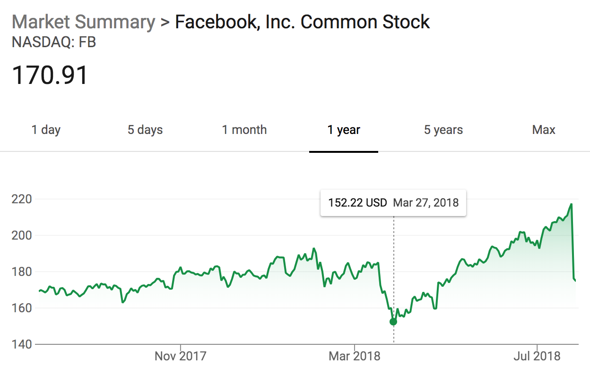

Let's talk about Facebook
"Stock market corrections, although painful at the time, are actually a very healthy part of the whole mechanism, because there are always speculative excesses that develop, particularly during the long bull market."

"Stock market corrections, although painful at the time, are actually a very healthy part of the whole mechanism, because there are always speculative excesses that develop, particularly during the long bull market."
Facebook to buy or not to buy?
Are you on Facebook? What about Instagram? Ok I admit, it’s a loaded question--I’m not. I quit using Facebook over a year ago, reverting back to primeval habits—courier pigeons to let my wife know I’ll be home for dinner, crude wall paintings to let my friends know when and where to meet me for happy hour, and dare-I-say-it, I even pick up the phone to call my friends in FL when its about time to catch up.
I jest to illustrate that many have linked general communication with social-media. These are not the same thing—we still have phones, email, and REAL LIFE. So in this new era of Instagram and Snapchat we’ve seen a drift from the traditional platform. A shift that started years ago:
So when the stock price dropped ~20% last week in the wake of earnings, I saw this as a continuation of trends after seeing similar price action last quarter. But WAIT! There’s more….
Ironically, this time, Facebook has been its own worst-enemy, moving to a “time well-spent” model for user experience instead of traditional “overall engagement.” That means “bye-bye” Clickbait. So instead of auto-play videos, Russian ads, political news, and random content algorithms spamming your feed, you can expect to see more baby photos, memes, your friend’s latest travels, or whatever sustenance you typically rummage out of your personal Facebook feed.
The second element of this is the update to data usage policies, privacy controls, and user-personalization. I suspect Facebook will not be alone in taking a hit to its profits as GDPR regulations and the repercussions from the Cambridge Analytica scandal continue to restrict and hamper tech companies’ usage of user data. That means Facebook won’t be able to push those creepy-stalker-like ads anymore and that means companies won’t be paying up for them either.
The last drop of poison is the newest innovative feature for your Facebook newsfeed: Stories. You may be familiar with this “new” evolutionary feature… Snapchat launched stories in 2013, and then Facebook’s Instagram—umm—mimicked the feature in 2016! ::GASP:: … but only after attempting to acquire Snapchat for $3B.
To be clear, Facebook has had overall success using stories to leverage user engagement. Instagram has been a widely successful platform. Facebook even pushed the feature to messenger. However, its the combination of a shift away from user-personalization and towards stories that creates a deadly-combination for Facebook. This means while companies are adjusting and rebuilding their social media advertising strategy, users will simultaneously be skipping more videos and spending “screen-time” away from all the static personalized ads that plague news feeds.

One thing is for certain, this marks a clearly delineated shift for Facebook, as seen in today’s stock price. If you were a buyer on the last dip, I get it, maybe its still a buy here, but otherwise, unless you have a clear vision for Facebook’s advertising profitability in the near future, I’d stay away. Time, demographics, execution, and compromise will determine the long-term outcome. Any immediate conclusions are myopic and speculative.
Disclosure: The author has no positions in any stocks mentioned, and no plans to initiate any positions within the next 72 hours. This article was written by the author and expressed his own opinions. The author is not receiving compensation nor does he have a business relationship with any company whose stock is mentioned in this article.
Additional disclosure: This article is for information purposes only. There are risks involved with investing including loss of principal. The author makes no explicit or implicit guarantee with respect to performance or the outcome of any investment or projections made. There is no guarantee that the goals of the strategies discussed here-in will be met.